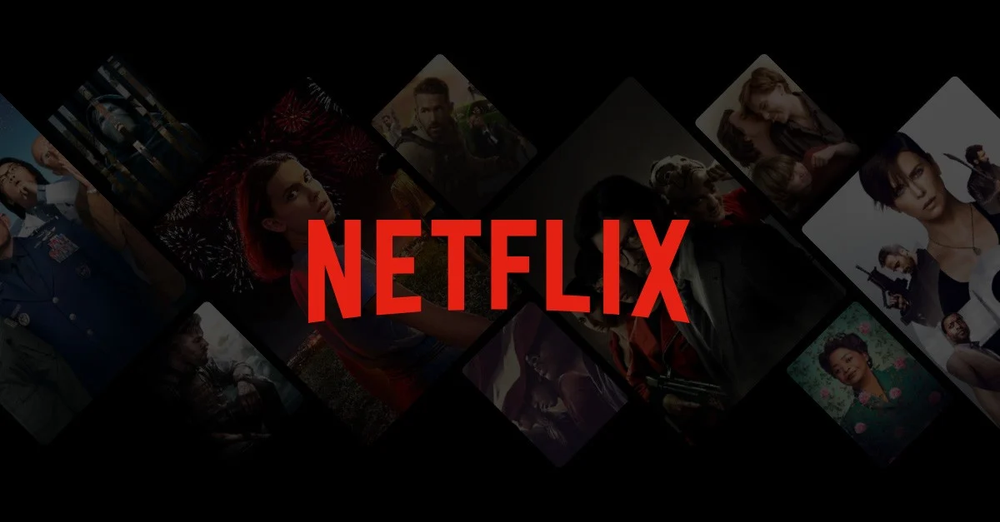
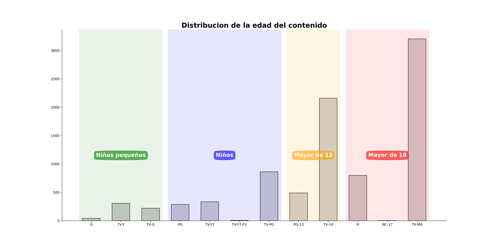

Fuente de datos de https://www.kaggle.com/datasets/shivamb/netflix-shows

Desarrollo a través del tiempo y país
A continuación se muestra el desarrollo de cómo se han ido añadiendo los diferentes tipos de contenido en
Netflix con temporalidad:
Se observa que se empezó añadir contenido sobre todo a partir del 2016 sobretodo de películas y como se muestra
ahora ese momento es cuando a parte de EE.UU se empiezan a hacer streaming en otros países:
Se aprecia que principalmente donde se añaden series y películas es en EE.UU e India.
Tipos de contenidos
Veamos cuales son los tipos de contenidos que se ha añadido a lo largo de estos años:
Se ve que se centraron en hacer películas internacionales, Dramas y comedias.
Distribución de la edad del contenido
A continuación se muestra la distribución de la edad del contenido para su audiencia objetivo.

Parece que el contenido añadido es principalmente para adolescentes en adelante, sobre todo haciendo hincapié en personas mayores de 18, posiblemente debido a que son quienes pagan este servicio.
Directores y actores
Lo siguiente que se observa son los directores y los géneros en los que han trabajado (se enseñan los 50 top directores):
Se centran en hacer sobre todo los tipos de contenidos que salieron más comunes, pero las stand-up Comedy y Romactic movies son donde en específico repiten más los mismos directores.
A la hora de mirar los actores hay una gran variedad así que vamos hacer un Bag of Words (BoW) para ver cuales son los nombres más comunes y conocer aproximadamente la procedencia de estos actores:
Se observa que los nombres más comunes son anglosajones algo que tiene mucho sentido por donde se van añadiendo las películas cuya población diana también lo son.
Descripción de los shows añadidos
Por último se realiza un Bow de la descripción de los diversos series y películas que se van añadiendo a lo largo de los años, dividido por series, películas y ambos:
Se aprecia que las principales palabras en general son vida, juventud, nuevo, familia, mundo, hombre,amor, mujer y amigos.
Conclusión
Se concluye que las películas añadidas en netflix en los últimos años son principalmente a partir de 2016 , sobre todo en EE.UU, para adolescentes en adelante con contenido dramático, internacional y cómico, compuesto por actores anglosajones y tratando temas de la familia, el amor y los amigos